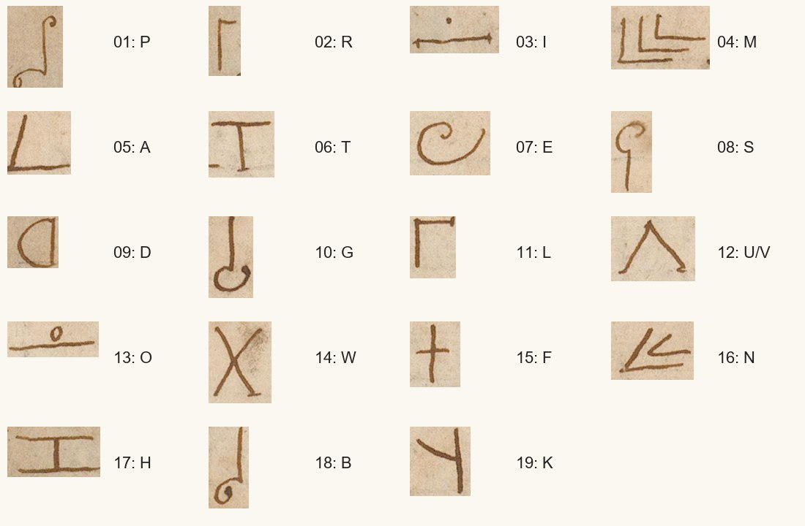

01 What the object is
The cipher is on the blank surface before the title page, library canvas [2], image 1033442. The library dates the volume to 1618 and attributes the work to Daniel Mögling, writing as Theophilus Schweighardt. Neither fact dates or identifies the anonymous cipher annotation: it has no signature, recipient or date. The full volume has 42 digitized surfaces. A visual survey found no further specimen of this cipher or corresponding key.
The pencil note above the cipher concerns the author's pseudonyms. It is not an interlinear decipherment. The cipher is available publicly through the library's IIIF service; a DECODE login is not needed to inspect the original.
02 All five lines
This is the literal output of the reconstructed key, preserving line breaks. Word divisions are editorial; the common U/V sign is rendered U. Punctuation is omitted from the sign count.
PRIMA MATERIA IST DIE GALLE UOM WIDDER DAS GEFAE IST EINE HALB RUNDE KUGEL DER OFFEN IST DIE WAGE
With UOM read as VOM, historical spelling normalized, and the conjectural final letter bracketed:
Prima materia ist die Galle vom Widder. Das Gefä[ß] ist eine halbrunde Kugel. Der Ofen ist die Waage.
In English: “The prime matter is the gall of the ram. The vessel [emended] is a half-round sphere. The furnace is the balance [or Libra].” This identifies the wording, not a practical chemical procedure. An astrological or other alchemical interpretation of ram and balance is possible but has not been established.
03 Separating similar signs
The published partial decipherment supplies many cribs, including repeated IST, DIE and the phrase about a round sphere. The opening gives no sense if the nested angles are confused with the semicircular D, or if the first curled staff is taken for F. Three nested angles give M in PRIMA, MATERIA and VOM. Two give N in EINE, RUNDE and OFFEN. The semicircle is D.
The first curled staff has an upper curl as well as a lower one: P. The B of HALB has only the lower curl. The cross supplies F consistently in GEFAE and the two adjacent F positions of OFFEN. A solid dot above a line is I, whereas an open ring above a line is O. The three signs after GALLE are therefore V-O-M. The result means “gall of the ram”; it does not enumerate “gall and ram.”

The repository pairs a sign-ID transcription with this key and replays it mechanically. Line lengths are 15, 17, 15, 17 and 15: 79 signs, 19 distinct forms. No nulls, homophones or word codes are needed. Letter shapes vary, especially the arms distinguishing R and L; the image and repeated words support the separation.
04 The emendation
The last sign of GEFAE, line 3 position 8, looks like E and is decoded E by the same table as every other occurrence. Changing its key value globally destroys the rest of the reading. Gefäß is strongly indicated by “is a half-round sphere,” but the required S/ß is not there. A copying or enciphering error is the likely explanation; it remains a conjecture.
Coverage is reported in two ways: 79/79 assigned, and 78/79 (98.73%) coherent without emendation. The latter is the conservative completion measure. Under this repository's provenance grades, reconstructed values are I (context-derived) and the editorial repair is M (uncertain). The key is complete only for occurring signs; unobserved letters are unknown. The writer, annotation date and precise alchemical meaning remain open.
05 Sources and credit
- Zentralbibliothek Zürich, SCH R 201, Speculum sophicum rhodo-stauroticum, catalogued 1618. Cipher surface, image 1033442. Library images: Public Domain Mark.
- DECODE R4817, checked September 2026: Non-decrypted (no decipherment attached), Unknown cipher type, graphic signs. Catalogue item 271 has been removed from this project's open list; a database correction is queued.
- Uwe Maximilian Korn, “‘Bilderfahrzeug’ of the Rosicrucians”, in Between Manuscript and Print (2023), pp. 159–186, especially p. 178, fig. 11 and n. 41: partial decipherment credited to Anne-Simone Rous. Open chapter. Her work was consulted before this attempt and used as a crib.
Targeted title, shelfmark and Tomokiyo searches located no additional full solution. Exact-phrase searches did not locate an independent parallel. The work here completes and corrects Rous’s partial decipherment.
Transcription, key, literal reading, token ledger and notes: r4817/ in the repository.